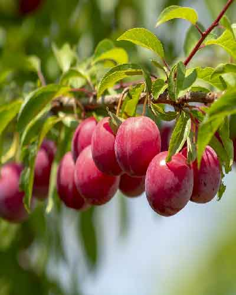
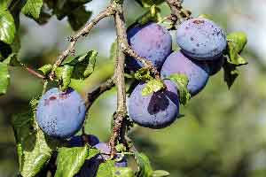

Hakkımızda
Dilara Fidancılık ve Süs Bitkileri hizmetinizde...

Dilara Fidancılık ve Süs Bitkileri
Kocaeli'nin İzmit ilçesinde Kandıra yolu üzerinde kurulmuştur. Birbirinden güzel fide, fidan ve çiçekler üretmekte ve satışa sunmaktadırlar.
Dilara Fidancılık ve Süs Bitkileri
Müşerilerine her zaman bilgi vererek kendilerine yardımcı olmaktadırlar.
